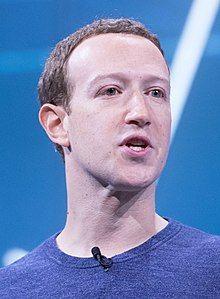

Junto aos seus colegas da faculdade da Universidade de Harvard, os estudantes Eduardo Saverin, Andrew McCollum, Dustin Moskovitz e Chris Hughes, lançou o Facebook em 2004.[8][9] O Facebook expandiu-se rapidamente, com um bilhão de usuários até 2012. Zuckerberg foi envolvido em várias disputas legais que foram iniciadas por outros no grupo, que reivindicou uma participação da empresa com base na sua participação durante a fase de desenvolvimento do Facebook.
Em dezembro de 2012, Zuckerberg e sua esposa Priscilla Chan anunciaram que dariam a maior parte de sua riqueza ao longo de suas vidas para "fazer avançar o potencial humano e promover a igualdade" no espírito de The Giving Pledge.